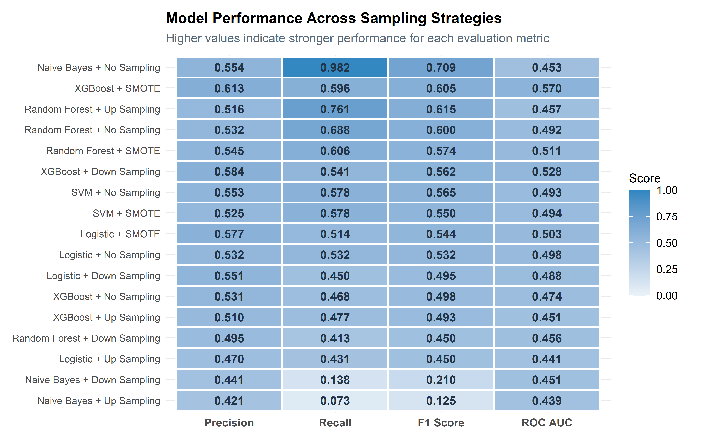
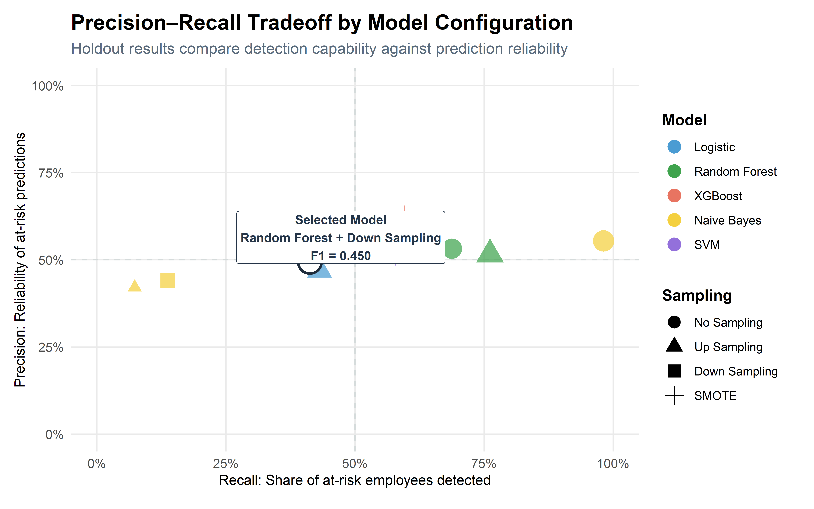
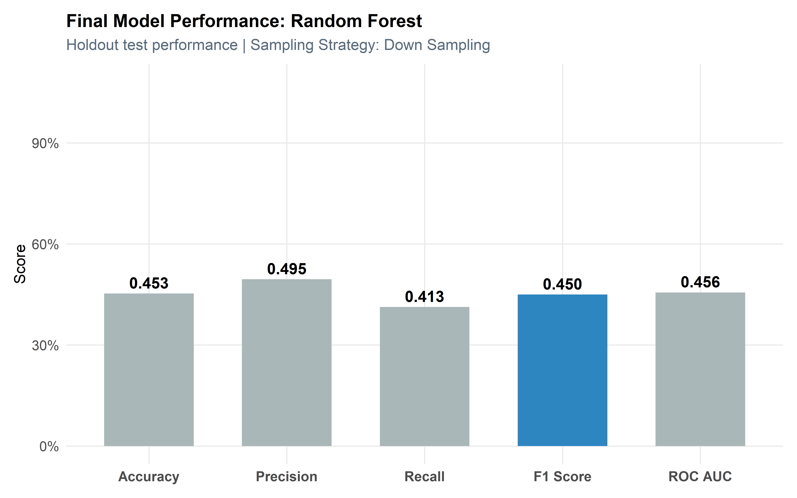
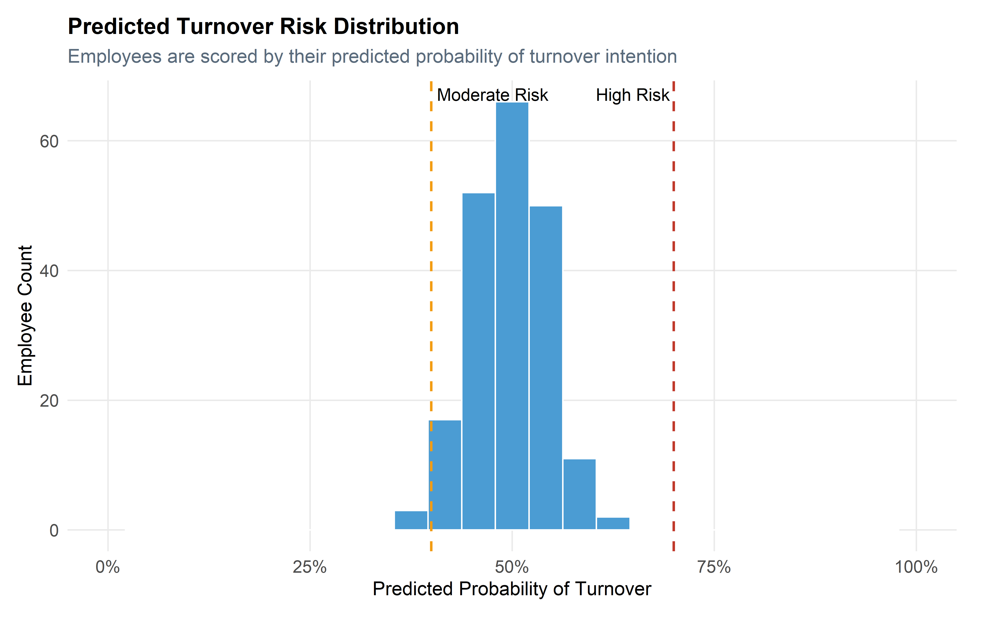
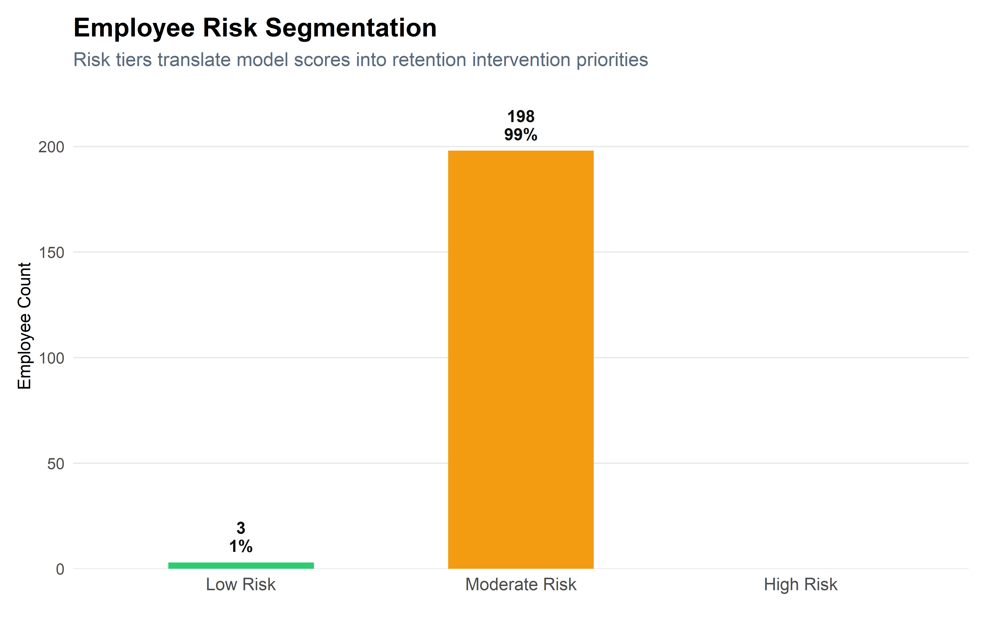

Turnover Intention Modeling
This section develops and evaluates predictive models to identify employees at risk of turnover, interpret key workforce risk patterns, and translate model outputs into executive-level retention recommendations.
Executive Summary
This analysis develops a predictive modeling framework to identify employees at risk of turnover using a synthetic, research-informed HR dataset.
Multiple machine learning models—including Logistic Regression, Random Forest, XGBoost, Support Vector Machines, and Naive Bayes—were evaluated across multiple sampling strategies to address class imbalance and compare predictive performance under different modeling conditions.
Results show that model effectiveness is shaped by both algorithm choice and data strategy. Sampling strategies such as up-sampling, down-sampling, and SMOTE changed model behavior in meaningful ways, demonstrating that class-balancing choices can materially affect precision, recall, F1 Score, and overall usability.
The final model-selection process uses cross-validated F1 Score as the primary ranking metric, while holdout test performance is used as a stability check to confirm that the selected configuration remains practically usable on unseen data.
Rather than relying on a single predictive signal, turnover risk is influenced by a combination of behavioral, organizational, wellbeing, and perception-based factors, including engagement, burnout, managerial support, role conditions, and workplace experience.
From a business perspective, this framework enables a shift from reactive attrition response to proactive workforce risk management, supporting earlier intervention, better resource allocation, and improved retention outcomes.
Modeling Overview
This section builds on the exploratory analysis by applying predictive modeling techniques to identify employees at risk of turnover.
Rather than relying on a single model, multiple algorithms are evaluated and compared to determine the most effective approach for workforce decision-making.
Each model is assessed using cross-validation and evaluated across multiple sampling strategies to address class imbalance.
The objective is not only to identify the most accurate model, but to determine which approach best aligns with organizational priorities.
Data Preparation & Modeling Framework
Target Definition
The target variable for this analysis is turnover intention, representing whether an employee is likely to leave the organization.
This binary outcome is structured as a classification problem, with levels defined as “No” (retained) and “Yes” (at risk of leaving). Establishing a consistent target structure ensures that all models are trained and evaluated under the same conditions.
Data Partitioning
To evaluate model performance objectively, the dataset is split into training and testing subsets.
The training set is used to fit and tune models, while the test set is reserved for final evaluation. Stratified sampling is applied to preserve the original class distribution of turnover intention, ensuring that model performance reflects realistic conditions.
Feature Engineering Pipeline
A standardized preprocessing pipeline is applied to ensure consistency across all models.
Categorical variables are converted into numeric representations using dummy encoding, and numeric variables are normalized to improve model stability—particularly for algorithms sensitive to scale, such as Logistic Regression and Support Vector Machines.
Additionally, zero-variance predictors are removed to prevent redundant or non-informative features from influencing model performance.
Cross-Validation Strategy
Cross-validation is used to evaluate model performance during training and reduce the risk of overfitting.
By partitioning the training data into multiple folds, each model is evaluated across different subsets of the data. This provides a more robust estimate of model performance compared to a single train-test split.
Model Development
Each model is implemented using a consistent preprocessing pipeline, ensuring that performance differences are driven by the modeling approach rather than data preparation.
- Logistic Regression (baseline, interpretable)
- Random Forest (ensemble tree-based)
- XGBoost (boosted trees for performance)
- Support Vector Machine (nonlinear classification)
- Naive Bayes (probabilistic baseline)
This allows for a fair comparison across algorithms with varying levels of complexity and interpretability.
Model Pipelines
Workflows are used to combine preprocessing steps and model specifications into a single pipeline.
This ensures that all transformations are applied consistently during both training and prediction, reducing the risk of data leakage and simplifying model management.
Evaluation Metrics
Model performance is evaluated using a combination of classification metrics.
Accuracy provides an overall performance measure, while precision and recall capture trade-offs between false positives and false negatives. The F1 Score balances these two metrics, and ROC AUC evaluates the model’s ability to distinguish between classes.
Using multiple metrics ensures a comprehensive evaluation aligned with business priorities.
Hyperparameter Tuning
For models with tunable parameters, grid search is used to identify optimal configurations.
This process evaluates multiple parameter combinations using cross-validation, selecting those that maximize predictive performance. Tuning helps improve model accuracy while maintaining generalizability.
Model Training
Multiple supervised learning models were evaluated, including Random Forest, XGBoost, Support Vector Machines, Logistic Regression, and Naive Bayes.
Each model and sampling strategy combination was evaluated through cross-validation. Tunable models were optimized separately within each sampling condition, ensuring that model selection reflects the combined effect of algorithm choice, preprocessing, and class-balancing strategy.
Rather than focusing on individual model outputs, performance is summarized comparatively to highlight relative strengths across modeling approaches.
## maximum number of iterations reached 0.001119137 -5.821999e-09Model Evaluation
This section evaluates how each model performs on unseen data and determines which approach is most suitable for real-world workforce decision-making.
Rather than focusing solely on accuracy, evaluation emphasizes the precision–recall tradeoff, balancing the ability to detect at-risk employees with the cost of unnecessary intervention.
This ensures model selection aligns with operational priorities, where both detection capability and decision efficiency matter.
Key metrics include:
- Accuracy → Overall correctness
- Precision → Reliability of positive
predictions
- Recall → Ability to detect at-risk employees
- F1 Score → Balance between precision and
recall
- ROC AUC → Overall classification strength
This comparison highlights the trade-offs between detection, prediction reliability, and practical intervention burden.
Test Set Performance
Final model performance is evaluated on the holdout test dataset.
This step provides an unbiased assessment of how each model performs on unseen data, ensuring that results reflect real-world predictive capability rather than training performance.
The evaluation framework compares each model and sampling strategy combination using cross-validation, then confirms the selected model on the holdout test set. This separates model selection from final performance confirmation and provides a more defensible assessment of how the model is likely to generalize.
Sampling Strategy Framework
Sampling techniques are applied within the preprocessing pipeline to ensure consistency across models.
By integrating sampling directly into the workflow, transformations are applied only to the training data, preventing data leakage and preserving the integrity of model evaluation.
Sampling Recipes and Evaluation Setup
Each sampling strategy is embedded directly into the modeling recipe. This ensures that class balancing occurs only within the training folds during cross-validation, preventing leakage into validation or test data.
Model Evaluation Results & Insights
This section synthesizes model performance across sampling strategies and evaluation metrics, providing a comparative view of how different approaches perform under realistic conditions.
The focus shifts from individual model behavior to cross-model insights, highlighting trade-offs that directly impact workforce decision-making.
The goal is to identify a model that balances detection capability with operational efficiency—minimizing both missed risk and unnecessary intervention.
Sampling Strategy Comparison
Class imbalance is a major challenge in turnover prediction, as fewer employees typically fall into the “Yes” category.
To address this, multiple sampling strategies were applied:
- No Sampling (baseline)
- Up Sampling (increase minority class)
- Down Sampling (reduce majority class)
- SMOTE (synthetic minority generation)
The goal is to understand how balancing the dataset impacts model performance.

The heatmap shows that no single configuration dominates across every evaluation metric. Some model and sampling combinations produce stronger recall but weaker precision, while others are more conservative and stable. This reinforces that model performance is shaped by the interaction between algorithm choice, class-balancing strategy, and the metric being emphasized.
Because these tradeoffs are meaningful, the final recommendation should not be based on a single metric column or one favorable result. Instead, the report prioritizes balanced performance by using cross-validated F1 Score as the primary ranking signal and then confirming that the recommended configuration remains practically usable on the holdout test set.
Precision–Recall Curve Analysis

The precision–recall view shows how each model configuration balances detection capability against prediction reliability. Configurations farther to the right detect more at-risk employees, while configurations higher on the chart produce more reliable positive predictions.
The selected configuration is highlighted with an outlined marker. It is not chosen because it maximizes a single metric in isolation; rather, it provides the strongest cross-validated F1 Score among configurations that also produced usable holdout performance.
This reinforces the business logic behind the model-selection process: the goal is not to flag as many employees as possible or to avoid all false positives, but to create a practical risk-screening layer that can guide earlier review without replacing human judgment.
Decision Matrix & Model Comparison
| Cross-Validated Model Decision Matrix | ||||||
| Top configurations ranked by cross-validated F1 Score | ||||||
| Model | Sampling | Accuracy | Precision | Recall | F1 | ROC_AUC |
|---|---|---|---|---|---|---|
| SVM | Down Sampling | 0.484 | 0.462 | 0.732 | 0.612 | 0.500 |
| SVM | Up Sampling | 0.483 | 0.465 | 0.866 | 0.596 | 0.520 |
| Naive Bayes | SMOTE | 0.479 | 0.461 | 0.681 | 0.523 | 0.509 |
| Naive Bayes | Down Sampling | 0.469 | 0.442 | 0.667 | 0.519 | 0.505 |
| Naive Bayes | Up Sampling | 0.501 | 0.465 | 0.531 | 0.488 | 0.474 |
| Random Forest | Down Sampling | 0.497 | 0.456 | 0.491 | 0.472 | 0.492 |
| XGBoost | Down Sampling | 0.497 | 0.452 | 0.472 | 0.460 | 0.497 |
| SVM | SMOTE | 0.493 | 0.451 | 0.474 | 0.459 | 0.504 |
| Logistic | Down Sampling | 0.488 | 0.445 | 0.466 | 0.455 | 0.471 |
| XGBoost | No Sampling | 0.513 | 0.466 | 0.411 | 0.437 | 0.497 |
| Logistic | SMOTE | 0.483 | 0.436 | 0.436 | 0.436 | 0.473 |
| XGBoost | Up Sampling | 0.499 | 0.451 | 0.417 | 0.432 | 0.491 |
Model Selection
Model selection was guided by a two-step rule designed to balance statistical rigor with business usefulness.
First, candidate configurations were ranked by cross-validated F1 Score, which serves as the primary model-selection metric because it balances precision and recall under class imbalance. Second, the leading candidates were reviewed on the holdout test set to confirm that they still produced usable positive-class predictions on unseen data.
This second step matters. A configuration can rank highly during resampling yet behave too aggressively or too weakly on the holdout set. For this reason, the final model is selected as the strongest cross-validated configuration that also satisfies minimum holdout stability requirements.
In this run, the recommended configuration was Random Forest with Down Sampling. The model should be interpreted as a risk prioritization tool, meaning it helps identify employees or workforce segments that may warrant earlier review, while leaving final decisions to HR leaders, managers, and organizational context.
Selected Model Holdout Performance

Risk Distribution
The risk distribution shows how the selected model assigns turnover-risk probabilities across the holdout test set. These scores should be interpreted as prioritization signals rather than definitive classifications. In practice, organizations would calibrate decision thresholds based on HR capacity, intervention cost, and tolerance for missed risk.

Risk Segmentation
The segmentation view translates predicted probabilities into practical intervention tiers. In this run, most employees fall into the moderate-risk band, suggesting the selected model is better suited for prioritizing relative risk than for making sharp high-versus-low classifications.
This does not mean the model is wrong. It means the thresholds should be calibrated to the organization’s decision context. In practice, HR teams could adjust these cutoffs based on available review capacity, intervention cost, and tolerance for missed risk.

Final Model Summary & Key Takeaways
The selected model represents the strongest cross-validated F1 Score among configurations that also met minimum holdout stability requirements. This means the final model was not selected only because it performed well during resampling; it also had to produce usable positive-class predictions on unseen data.
While the absolute performance values remain moderate, the model is useful as a risk prioritization tool because it helps rank employees by relative likelihood of turnover intention. This distinction is important: the model should not be used to make automatic employment decisions. Instead, it supports earlier review, targeted retention conversations, and more focused workforce planning.
📊 Key Takeaways
Random Forest
Optimized using Down Sampling with a focus on F1 Score
Why This Model Was Selected
Why This Model Was Selected
The final model was selected because it achieved the strongest cross-validated F1 Score among configurations that also met minimum holdout stability requirements.
In this run, the selected configuration was Random Forest with Down Sampling. It achieved a cross-validated F1 Score of 0.472, while its holdout test results produced precision of 0.495, recall of 0.413, and F1 Score of 0.45.
The selected model met the holdout stability screen and ranked strongest by cross-validated F1 Score among stable candidates.
This selection rule balances model-development rigor with practical business usefulness. Cross-validation identifies the strongest generalizable configuration, while the holdout stability check ensures the final model still produces usable predictions on unseen data.
Because the model is designed for workforce risk screening, predictions should be treated as prompts for further HR or manager review, not as standalone conclusions about employee behavior.
Selected Model Performance Metrics
The table below reports holdout test performance for the selected configuration. These values are not used alone to select the model; instead, they confirm whether the cross-validated winner remains practically usable on unseen data.
| Selected Model Performance Summary | |
| Holdout test performance for Random Forest with Down Sampling | |
| Metric | Score |
|---|---|
| Accuracy | 0.453 |
| Precision | 0.495 |
| Recall | 0.413 |
| F1 Score | 0.450 |
| ROC AUC | 0.456 |
Top Model Configurations
| Top Model Configurations | ||||||
| Cross-validated ranking with holdout confirmation | ||||||
| Model | Sampling | CV F1 Score | Holdout Precision | Holdout Recall | Holdout F1 | Status |
|---|---|---|---|---|---|---|
| SVM | Down Sampling | 0.612 | NA | 0.000 | NA | Not Selected |
| SVM | Up Sampling | 0.596 | NA | 0.000 | NA | Not Selected |
| Naive Bayes | SMOTE | 0.523 | NA | 0.000 | NA | Not Selected |
| Naive Bayes | Down Sampling | 0.519 | 0.441 | 0.138 | 0.210 | Viable but Below Stability Screen |
| Naive Bayes | Up Sampling | 0.488 | 0.421 | 0.073 | 0.125 | Viable but Below Stability Screen |
| Random Forest | Down Sampling | 0.472 | 0.495 | 0.413 | 0.450 | Selected Final Model |
| XGBoost | Down Sampling | 0.460 | 0.584 | 0.541 | 0.562 | Holdout-Stable Alternative |
| SVM | SMOTE | 0.459 | 0.525 | 0.578 | 0.550 | Holdout-Stable Alternative |
| Logistic | Down Sampling | 0.455 | 0.551 | 0.450 | 0.495 | Holdout-Stable Alternative |
| XGBoost | No Sampling | 0.437 | 0.531 | 0.468 | 0.498 | Holdout-Stable Alternative |
Performance metrics indicate which configurations screen turnover risk most effectively. The next step is to translate those outputs into practical retention insight by connecting model behavior back to broader workforce patterns.
This section interprets the likely drivers of turnover intention and links those patterns to actionable workforce response areas.
Driver Interpretation
While model performance identifies which employees may warrant attention, the next question is why those employees are being flagged. Because the selected workflow does not provide a single, straightforward model-agnostic importance ranking, interpretation is grounded in the broader patterns observed across exploratory analysis and model behavior.
The evidence suggests that turnover intention is not explained by one isolated variable. Instead, risk appears to reflect a combination of engagement and commitment, wellbeing and burnout-related signals, managerial support, and role or work-context conditions. This aligns with the broader workforce story that exit risk tends to build through overlapping organizational and behavioral signals rather than one single trigger.
From a business perspective, this means retention action should not be one-dimensional. Stronger workforce response is more likely to come from coordinated intervention across engagement, manager effectiveness, workload, wellbeing, and job-context review.
Feature → Action Mapping
To translate model insights into practical action, key risk areas are mapped to targeted workforce interventions. This bridges the gap between predictive analytics and real-world decision-making by connecting model interpretation to practical HR response strategies.
| Turnover Risk Driver-to-Action Map | ||
| Translating model insights into workforce intervention strategy | ||
| Risk Area | What It Suggests | Recommended Action |
|---|---|---|
| Engagement and commitment | Employees showing lower connection to the organization may be more likely to consider leaving. | Strengthen retention touchpoints, recognition, career conversations, and team-level engagement practices. |
| Burnout, stress, and wellbeing | Elevated strain may increase disengagement and turnover intention. | Review workload balance, manager support, wellness resources, and staffing pressure points. |
| Manager and leadership support | Weak support signals may reduce trust and increase perceived exit attractiveness. | Improve manager coaching, communication cadence, feedback quality, and escalation pathways. |
| Role and department context | Some roles or departments may experience higher structural risk due to workload, expectations, or limited mobility. | Compare risk patterns by department, job family, seniority, and work arrangement before taking action. |
| Work arrangement and environment | Work setting and environmental satisfaction may shape employee experience and retention risk. | Evaluate flexibility, collaboration norms, work-life balance, and local team conditions. |
Business Impact & Decision Guidance
The model is designed to support workforce decision-making at a strategic level. Rather than functioning as an automated decision system, it should be used as a risk intelligence layer that helps HR and leadership prioritize where deeper review may be needed.
Strategic Decision Guidance
Strategic Decision Guidance
This model is best deployed as a risk prioritization tool, not as a standalone decision system.
- High-risk employees → Prioritize for HR or manager review
- Moderate-risk employees → Monitor engagement, workload, and support trends
- Low-risk employees → Maintain baseline retention and engagement strategy
The value of the model is not in replacing human judgment, but in helping decision-makers focus attention earlier and more consistently.
Model Limitations
Model Limitations
The model should be interpreted within the context of synthetic data, simulated workforce patterns, and organizational variability.
- Predictions reflect patterns in synthetic data, not observed outcomes from a real organization
- Performance may shift when applied to different employee populations or industries
- Risk scores should support review and prioritization, not automatic employment decisions
- Human context remains essential before any intervention is taken
Final Takeaway
Turnover intention is not driven by a single variable. It reflects a network of behavioral, organizational, wellbeing, and perception-based signals that collectively indicate turnover risk.
The modeling framework demonstrates how predictive analytics can move beyond static reporting and support proactive workforce planning. Even with imperfect prediction, the model provides a structured way to identify potential risk earlier, prioritize attention, and guide more targeted retention strategies.
Used responsibly, this type of model becomes a decision-support tool: not a replacement for HR expertise, but a way to help organizations act earlier, allocate resources more effectively, and improve long-term retention outcomes.